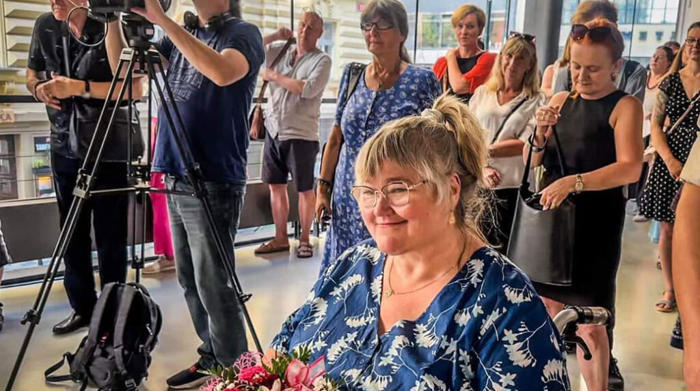
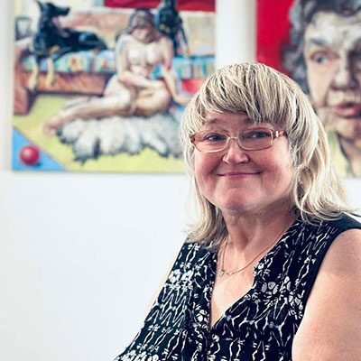
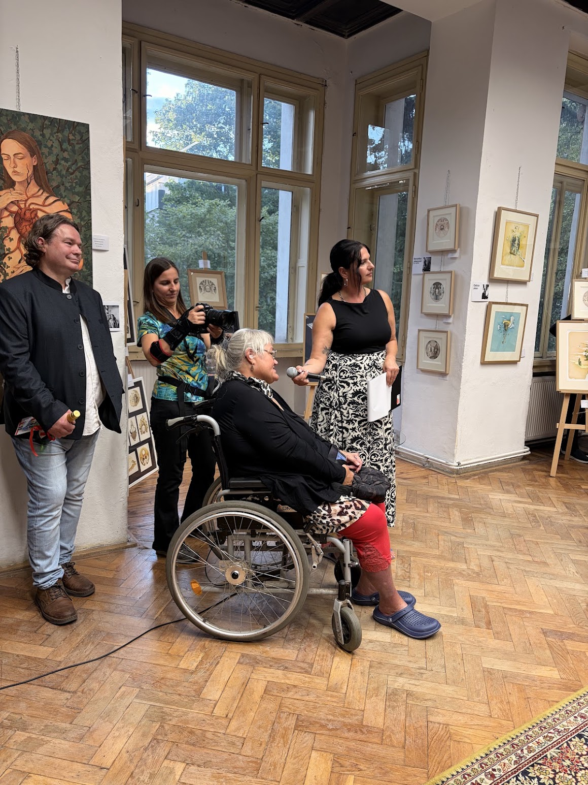

Romana
Šubrtová
Obrazy, které přinášejí teplo domů.
Paintings that bring warmth home.
Prohlédnout díla View works

O autorce
About the Artist
Mgr. Romana Šubrtová (*1. 3. 1968, Praha) je výtvarnice z Prahy působící v oblastech kresby, malby a grafiky. Vystudovala výtvarnou výchovu na Pedagogické fakultě Univerzity Karlovy, kde ji významně ovlivnili PeadDr. Jan Svoboda a doc. ak. mal. Jiří Kornatovský. Po studiích se věnovala pedagogické činnosti jako učitelka výtvarné výchovy na základní škole. Právě tehdy se začala hlouběji zajímat o metodiku výuky a dětský výtvarný projev. Se svými žáky se pravidelně účastnila prestižních přehlídek dětské tvorby, kde jejich práce opakovaně získaly ocenění.
Romana Šubrtová se zároveň intenzivně věnuje vlastní tvorbě. Její dílo zahrnuje kresbu, malbu, grafiku i keramiku. Pozornost veřejnosti si získala zejména cyklem padesáti ilustrací s pohádkovými motivy, které propojují surrealistické vidění s poetickou imaginací. Její ilustrace byly publikovány v několika časopisech, čímž oslovily širší publikum.
V současnosti se autorka zaměřuje především na figurální malbu realizovanou na velkoformátových plátnech. Fascinuje ji práce s barevnou pastou a vztah lidské figury k prostoru. Ve svých dílech často využívá kontrast a experimentuje s malířskými technikami, čímž dosahuje výrazné dynamiky a hloubky kompozice. Inspiraci čerpá mimo jiné z tvorby Michaela Rittsteina, zejména z jeho charakteristického vrstvení sytých barevných hmot, které obrazům propůjčuje plastický efekt.
V roce 2018 vytvořila dva tematické soubory: Člověk na pláži, u vody, odpočívající a Člověk s posunutým vnímáním, pod vypětím, s omezenou schopností komunikovat. Oba projekty byly představeny na výstavě Emoce v roce 2019 v Galerii U Zlatého kohouta. V roce 2022 vystavovala v Galerii 1 v Praze, kde představila výběr obrazů s důrazem na lidskou postavu, emoci a barevnou expresi.
Před téměř deseti lety utrpěla Romana vážné poranění páteře při pádu, které ji od té doby upoutalo na invalidní vozík. Přestala malovat pravou rukou, přesto nikdy nepřestala tvořit. Drtivá většina jejích obrazů z posledních let vznikla levou rukou. Na otázku, zda jde o omezení, odpovídá se svým typickým klidem: „Nezáleží na tom, pokud to máte v hlavě, máte to i v rukou."
Tyto stránky připravil její syn jako hold výjimečné ženě a malířce, s přáním pomoci Romaně překlenout finanční těžkosti spojené s jejím postižením. Ať jsou také povzbuzením pro každého, kdo čelí nepřízni osudu: nevzdávejte se.
Mgr. Romana Šubrtová (*1 March 1968, Prague) is a visual artist from Prague working in drawing, painting, and printmaking. She studied art education at the Faculty of Education, Charles University, where she was profoundly influenced by PeadDr. Jan Svoboda and doc. ak. mal. Jiří Kornatovský. After her studies, she devoted herself to teaching art at primary school level. It was then that she began to explore the methodology of art education and children's creative expression more deeply. Together with her pupils, she regularly took part in prestigious exhibitions of children's artwork, where their pieces received repeated recognition.
Alongside her teaching, Romana Šubrtová has always been intensely devoted to her own creative work. Her practice encompasses drawing, painting, printmaking, and ceramics. She gained wider public attention through a cycle of fifty illustrations with fairy-tale motifs, combining a surrealist vision with poetic imagination. Her illustrations were published in several magazines, reaching a broader audience.
Today, the artist focuses primarily on large-format figurative painting. She is drawn to working with thick impasto colour and the interplay between the human figure and space. In her works, she often employs contrast and experiments with painterly techniques, achieving vivid dynamism and compositional depth. She draws inspiration, among others, from the work of Michael Rittstein, particularly his characteristic layering of saturated colour masses, which lends the paintings a sculptural, almost relief-like quality.
In 2018, she created two thematic series: Human at the Beach, by Water, at Rest and Human with Shifted Perception, under Strain, with Limited Ability to Communicate. Both projects were presented at the Emotions exhibition in 2019 at Gallery U Zlatého kohouta. In 2022, she exhibited at Gallery 1 in Prague, presenting a selection of works centred on the human figure, emotion, and colour expression.
Nearly ten years ago, Romana suffered a severe spinal injury in a fall, which has since left her wheelchair-bound. She also lost the use of her right hand for painting, and yet she never stopped creating. The overwhelming majority of her works from recent years have been painted with her left hand. When asked whether that is a limitation, she answers with characteristic calm: "It doesn't matter: if it's in the head, it's in the hands."
This website was created by her son, as a tribute to a remarkable woman and artist, with the hope of helping Romana through the financial hardships brought by her disability. May it also be an encouragement to anyone facing adversity: do not give up.
KontaktContact
Pokud vás některý z obrazů zaujal, neváhejte se ozvat autorce, nejlépe prostřednictvím WhatsApp.
If a painting appeals to you, please do not hesitate to reach out for furhter information, preferably via WhatsApp.